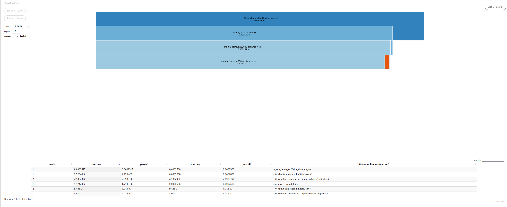
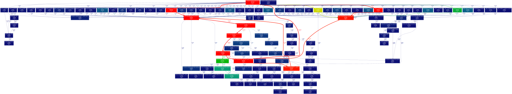

import time
import numpy as np
import matplotlib.pyplot as plt
n = 1000
val = 5.4Time efficiency
Time/computation: usage of %timeit
References:
magic commands are IPython commands such as: %timeit, %matplotlib, %autoreload. They work only in interactive cases (Ipython, Jupyter Notebook, Jupyter lab, etc.).
Let us compare the time to create a vector of size n and fill it with the value val with various methods, using the `
print('Using empty and fill:')
%timeit a = np.empty(n); a.fill(val)
# Alternative: uncomment below
# from IPython import get_ipython
# get_ipython().run_line_magic('timeit', 'a = np.empty(n); a.fill(val)')Using empty and fill:
518 ns ± 0.345 ns per loop (mean ± std. dev. of 7 runs, 1,000,000 loops each)print('Using empty and list syntax:')
%timeit a = np.empty(n); a[:] = valUsing empty and list syntax:
639 ns ± 0.484 ns per loop (mean ± std. dev. of 7 runs, 1,000,000 loops each)print('Using full:')
%timeit a = np.full((n,), val)Using full:
942 ns ± 0.195 ns per loop (mean ± std. dev. of 7 runs, 1,000,000 loops each)print('Using ones:')
%timeit a = np.ones(n) * valUsing ones:
1.88 µs ± 1.87 ns per loop (mean ± std. dev. of 7 runs, 1,000,000 loops each)print('Using repeat:')
%timeit a = np.repeat(val, n)Using repeat:
1.66 µs ± 2.01 ns per loop (mean ± std. dev. of 7 runs, 1,000,000 loops each)Alternatives for time measurement
Another classical way to time a chunk of code is to use the time module, as follows:
import time
start = time.time()
a = np.ones(n) * val
end = time.time()
print(f"Execution time: {end - start:.5f} s.")Execution time: 0.00007 s.Memory efficiency
memory_profiler
This module is deprecated and do not run with Python 3.12
You can run a memory profiler with the following magic command (other alternatives are available but require more coding and exporting the reports):
%load_ext memory_profilerFor illustration we compare a way to perform a distance matrix computation between two vectors, using a double loop or a vectorized approach.
n1 = 100
n2 = 100
x = np.random.randn(n1)
y = np.random.randn(n2)%%file mprun_demo.py
import numpy as np
def inv_distance(x, y):
n1 = len(x)
n2 = len(y)
dist = np.empty((n1, n2))
for i in range(n1):
for j in range(n2):
dist[i, j] = 1.0 / np.sqrt((x[i] - y[j]) ** 2)
return dist
def inv_distance_vect(x, y):
n1 = len(x)
n2 = len(y)
return 1.0 / np.sqrt((x.reshape((n1, 1)) - y.reshape((1, n2))) ** 2)Overwriting mprun_demo.pyWe can time the execution of the two functions:
from mprun_demo import inv_distance, inv_distance_vect
%timeit inv_distance(x, y)
%timeit inv_distance_vect(x, y)6.61 ms ± 4.64 µs per loop (mean ± std. dev. of 7 runs, 100 loops each)
24.9 µs ± 110 ns per loop (mean ± std. dev. of 7 runs, 10,000 loops each)The conclusion is simple: try to avoid loops in Python when performing matrix computation, and use vectorization and broadcasting as much as possible (or use numba or cython).
Some memory profiling can be performed with the memory_profiler package to investigate any difference in the memory footprint:
%mprun -f inv_distance inv_distance(x, y)%mprun -T mprun0 -f inv_distance_vect inv_distance_vect(x, y)
print(open('mprun0', 'r').read())In this case, the difference is almost negligible concerning memory, only the time computation was significantly different between the two approaches.
Profiling
A profile is a set of statistics that describes the time taken by various parts of a program.
cProfile
The cProfile module provides deterministic profiling of Python programs. A profile is a set of statistics describing how often and for how long various parts of the program run.
Let us illustrate the profiling for some of the previous examples.
import cProfile
cProfile.run('a = np.empty(n); a.fill(val)','fill.prof')cProfile.run('a = np.ones(n) * val','ones.prof')cProfile.run('inv_distance_vect(x, y)', 'inv_distance_vect.prof')line_profiler
You can use inline magic commands to profile a function line by line.
%load_ext line_profiler%lprun -f inv_distance_vect inv_distance_vect(x, y)or
%lprun -T lprof0 -f inv_distance inv_distance(x, y)
print(open('lprof0', 'r').read())An alternative is to use the kernprof package and @profile decorator, see examples here.
Visualization of the profiling results
snakeviz: a browser-based graphical viewer for the output of Python’scProfile. Here is a video tutorial. Launch the commandsnakeviz program.prof
%load_ext snakeviz
%snakeviz -t inv_distance(x, y)
*** Profile stats marshalled to file '/tmp/tmplzt2khpa'.
Opening SnakeViz in a new tab...Gtk-Message: 23:33:56.749: Not loading module "atk-bridge": The functionality is provided by GTK natively. Please try to not load it.The output generated is an interactive file that can be investigated in a browser, looking like:

gprof2dota Python script to convert the output from many profilers (includingcProfile’s output) into a dot graph, with export in .svg. You can run it in your terminal with the following commands:default python -m cProfile -o output.pstats inv_distances.py gprof2dot.py -f pstats output.pstats | dot -Tsvg -o output.svgYou can then display the .svg file: `viztracer: a nice solution that provides html output with interactive visualization. This can lead to very large traces for non-trivial programs. In this case it is recommended to trim the shortest function calls from the trace file before attempting to load it in the visualizer (See filter options here).
py-spy: this package can be combined withspeedscopefor nice visualization.
Debugging with pdb
Let us use import pdb; pdb.set_trace() to enter a code and inspect it. Push the key c and then enter to go next.
A first recommendation is to use the python debugger in your IDE.
Pure python or IPython can use the pdb package and the command pdb.set_trace(). A command prompt launches when an error is met, and you can check the current status of the environment. Useful shortcuts are available (e.g., the c key or the j key, etc.); a full list is available here. For instance, you can quit the debugger with the command q or quit
def function_debile(x):
answer = 42
answer += x
return answerfunction_debile(12)def illustrate_pdb(x):
answer = 42
for i in range(10):
import pdb; pdb.set_trace()
answer += i
answer += x
return answerillustrate_pdb(12)A terminal is launched when a problem occurs, and one can then take over and see what’s going on.
get_ipython().run_line_magic('pdb', '')
# %pdbdef blobl_func(x):
answer = 0
for i in range(x, -1, -1):
print(i)
answer += 1 / i
return answer
blobl_func(4)References:
- Debugging Jupyter notebooks by David Hamann
- Advanced Python Debugging with pdb by Steven Kryskalla
- Debug Python with VSCode